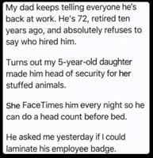

0

0

Researchers at the National University of Singapore have developed a machine-washable electronic fabric that can turn clothing into an interactive graphical user interface. The prototype reportedly survived 50 gentle machine washes and 1,000 bending cycles, though it still relies on external batteries and controllers. The Register reports: The development could lead - at some point - to a "future in which clothing functions as a pervasive, multimodal human-computer interface," according to the study published in peer-reviewed science journal Nature this week. The paper shows someone interacting with computing devices using the sleeve of a wool sweater (no jokes about the Windows ugly sweater please, this is serious). The researchers, led by Singapore National University research engineer Fu Heng, claim this is a big leap forward.
"This fiber-centric approach shifts wearable electronics from flexible panels toward truly textile-native architectures, laying the groundwork for fabrics that visualize, sense, communicate and compute as naturally as the garments they inhabit," the paper says. The researchers claim to have developed a scalable process to make millimeter-thick fibers. Using lasers to strip the insulation from specific spots on the thin copper wires, they attached light-emitting chips to the exposed sections, creating electrical connections to the chips. Thousands of chips were connected to the wires with extreme precision using this process.
The fibers were then fed into a transparent plastic tube, and made pressure-sensitive by adding two strips of a compressible, conductive polymer into a second longitudinal channel in the tube. The paper says they could make fibers 10 meters long using this method, and that they are thin and flexible enough to be woven into or attached to fabrics. The researchers were also able to add "peripherals" such as a microphone, a speaker, a temperature sensor and a light sensor.
Read more of this story at Slashdot.
Greece has passed a law banning children under 15 from social media platforms beginning January 1, 2027. The legislation requires platforms to implement reliable age verification and parents to use government-backed apps to restrict access, with penalties for noncompliance under the EU's Digital Services Act. Engadget reports: "It would have been very easy to do absolutely nothing today and wait for the perfect European law. But the challenge is here. Children are sinking into the internet every day, and I believe a responsible government must do what it is obliged to do," said Greece's digital governance and AI minister, Dimitris Papastergiou.
The legislation was opposed by Greece's minority parties, so Mitsotakis used his majority government to pass the bill. The nation previously barred mobile phones in schools in 2024, and opinion polls show that the new social media ban for children is widely supported by Greece's adult population. Mitsotakis previously said that his government's "goal is to push the European Union in this direction as well."
Read more of this story at Slashdot.
SpaceX is reportedly seeking access to at least 80,000 cellular tower sites across the U.S. as it prepares to launch Starlink Mobile as a fourth nationwide wireless carrier. "We will be building out our terrestrial networks so there's broad-based connectivity anywhere that SpaceX and Starlink are allowed to operate," Musk said during SpaceX's earnings call this week. Satellite launches plus spectrum acquisition "will pave the way for Starlink Mobile to become a major mobile carrier in the US," he said. Bloomberg reports: One of the companies they're in talks with is Crown Castle, which, along with American Tower and Vertical Bridge Holdings, are among the largest owners of cellular towers. When asked on a Wednesday earnings conference call whether Crown Castle is discussing leases with SpaceX, Amazon.com or other satellite-based telecom providers, Chief Executive Officer Chris Hillabrant said, "You can assume that we're talking to all parties." He declined to discuss specific customer details.
Mobile networks rely on antennas placed on towers across the country to transmit wireless signals. Carriers such as AT&T Inc., Verizon Communications Inc. and T-Mobile US Inc. typically lease room for their equipment at the tower sites because it's more cost effective than owning and maintaining them, in part because the facilities can be shared. The value of the deals with SpaceX could reach into the billions.
Read more of this story at Slashdot.
The New York Knicks reportedly sent employees a fake offer of complimentary NBA championship rings as part of an internal phishing test, requiring anyone who clicked the link to attend mandatory cybersecurity training. "Congratulations, your Employee Championship Ring is here," the email said. According to The New York Times, Madison Square Garden employees who clicked that link "were forced to attend a mandatory cybersecurity class to help satisfy some of [owner James] Dolan's growing cybersecurity concerns." Ars Technica reports: The offer wasn't implausible, either. "Typically, most employees for NBA teams receive rings, even if they are not as fancy and expensive as the ones the players receive," wrote Joe Vardon, senior NBA writer for The Athletic, which was bought by The New York Times in 2022 and then merged into the parent news organization. Vardon's article was primarily about how Knicks assistant coaches did not get rings on Tuesday when the team raised its first league championship banner since 1973. The assistant coaches were handed boxes without rings inside, though they are expected to receive rings later on.
"Ring orders, designs, and measurements can take time, and not every coaching staff for every defending champion gets its rings on ring night... The Knicks assistants were told they would receive championship rings eventually, but many longtime employees at Madison Square Garden, including some who work in the Knicks' business operations, will not receive rings at all, team sources told The Athletic," Vardon wrote. MSG employee hopes were raised "at the end of September when the Knicks sent an email to a long list of employees, which gave recipients a first glimpse at their would-be championship rings," Vardon wrote. The email included "a graphic of two differently styled rings" that the lucky employees could supposedly choose from, the article said.
"(Employee name), this one is on the house. MSG is issuing a complimentary employee championship ring. The same jeweler, the same craftsmanship, personalized with your name. No cost to you," the email said. "There are two designs to choose from: Championship Gold and Garden Classic. Reserve the one you want below." Vardon wrote that "multiple team sources" confirmed the email was a phishing test. It's not clear how many employees clicked the link or whether any of the employees who received the email will eventually get some type of championship ring. We contacted the Madison Square Garden Sports organization with these questions and will update this article if we get a response.
Read more of this story at Slashdot.
An anonymous reader quotes a report from TechCrunch: AI agents left to explore a virtual island without a specific task began inventing challenges of their own. MIT researchers say the behavior bears the hallmarks of play. The researchers put 13 AI agents called Eko, each running on Claude Opus 4.7, alone on a simulated desert island for 30 hours. They describe the experiment in a paper posted on arXiv, a site where researchers share studies before peer review. Afterward, they gave the agents specific challenges, like getting as many objects as possible onto the island's tallest rock spire. The Eko agents that had spent those 30 hours playing generally beat identical agents that had never set foot on the island.
Today, developers decide in advance what AI should practice and what counts as success. The researchers see this technique -- exploring without a goal -- as a different way for AI agents to learn skills, especially skills that could one day be used to control robots. "We normally develop artificial agents by deciding in advance what they should practice, what they should optimize, and what counts as progress," the researchers write in their report. "Play suggests another regime: give an agent a sufficiently rich and safe world, let it choose what is interesting, and allow useful knowledge to accumulate from the history that follows." UC Berkeley cognitive scientist Eunice Yiu told MIT Technology Review she was impressed with the findings but that more evidence is needed to determine whether AI models are genuinely playing. "It could be the case that the models are genuinely playing, but we don't know based on the paper," says Yiu. "If you only have the behavioral piece, it could be the case that they're just trying to abide by the prompt, trying to imitate humans."
MIT professor and coauthor of the paper, Phillip Isola, added: "It's not like this is a system that just suddenly magically decided to play. It's an artifact that learned from our culture, was trained by engineers at Anthropic, and was then placed on an island by us. It does things that surprise us and that are causally related to its future skillful behavior."
Read more of this story at Slashdot.
Microsoft has revealed pay-as-you-go pricing for Xbox Cloud Gaming, with introductory packages costing $3.99 for 10 hours, $7.99 for 25 hours, or $11.99 for 50 hours. Starting in November, Game Pass subscribers will receive only 5 to 15 included cloud-gaming hours depending on their tier and will have to buy additional time -- even to stream games they've already purchased. Gizmodo reports: Back in September, before these changes were announced, you paid full purchase price for a game that isn't in the Game Pass library on the assumption that you'd be able to play it via cloud streaming. Maybe your hardware doesn't meet the specs for this fancy new game. Maybe your gaming PC exploded/got stuck on a ship/had a component fail. Maybe you just want to be able to play it in bed on your laptop. Whatever. Now you find that in addition to the cost of the game you bought, you're going to be paying by the hour to play it once your monthly allotment of hours is up. If this is you, I expect you're not particularly amused. Thankfully, Microsoft notes that the playtime you purchase "remains available until it's used," so you won't have to worry about losing any unused time between gaming sessions.
Read more of this story at Slashdot.
Ukrainian drone strikes have damaged three major Yandex data centers as well as facilities serving Sberbank and VKontakte (the country's equivalent to Facebook), disrupting cloud services, banking, e-commerce, ride-hailing and other digital services across Russia. The attacks may deal a longer-lasting blow to Russia's AI ambitions: Yandex's affected facilities housed its three top-500 supercomputers, and experts say sanctions and shortages of high-end Nvidia chips could make repairs difficult or even take years. "This effectively sets Russia far behind in the AI race, "said Mikhail Klimarev, head of the Internet Protection Society activist group. Fortune reports: Data centers are the latest targets of aerial campaigns waged by both sides against each other's vital infrastructure. [...] Kyiv's attacks on Russian data centers closely followed Moscow's recent strikes on data centers in Ukraine, which disrupted the internet and TV broadcasts. On Oct. 8, Ukrainian drones hit a Yandex data center in Sasovo in the Ryazan region that houses two of the company's three supercomputers. A data center in Kaluga was hit a day later and the one in Vladimir was struck Oct. 11.
The data center and AI hub for Sberbank was hit Oct. 14 in Balakovo in the Saratov region, and four days later, Kyiv struck a data center in St. Petersburg serving VKontakte. While oil refineries and warehouses are easy prey, data centers are even softer targets -- massive buildings packed with servers and supporting power and cooling infrastructure. Lasting damage can result from a drone carrying a relatively light load of explosives.
[...] Ukraine has stored critical data on servers in allied European countries, helping limit the damage from Russian attacks. But Moscow's strict digital sovereignty policy requires all data storage at home, making it extremely vulnerable. "Because all the infrastructure and all the data is located inside Russia, it's relatively easier to take down," [said Nick Reiners, senior geotechnology analyst at Eurasia Group]. Klimarev predicted the data center attacks could encourage many top Russian companies to move data abroad, while the authorities could ease their efforts to tighten internet controls to minimize the damage.
Read more of this story at Slashdot.
Physicists at Northwestern University have successfully trapped a single positron for an entire month, allowing researchers to study its quantum properties with unprecedented precision. "Further investigations using the trap might reveal the secret of why the world around us is made of matter and not antimatter, when things could have presumably gone either way," reports Scientific American. From the report: Every normal particle of matter has an antimatter counterpart with equal mass but opposite charge. To build their trap, physicists started with atoms of sodium 22, a radioactive isotope with a half-life of about two and a half years. When one of these atoms decays, it emits a positron -- the antimatter counterpart of the electron. "The big challenge is to persuade these positrons to slow down and then capture them," says Gerald Gabrielse, a physicist at Northwestern University, who oversaw the project. The team reported its achievement on Wednesday in Physical Review Letters (PDF).
The first step is to send the positrons through the crystal lattice of a sliver of cold tungsten. As the particles go pinballing through the material, they slow down and lose energy. "Every time they bang into something, there's a chance of annihilation, but it doesn't always happen," Gabrielse says. "If they make it to the end, they get popped out." Next, the physicists steer the positrons along a channel using electromagnetic fields. Eventually the particles end up in a vacuum, just three tenths of a degree Celsius above absolute zero, trapped by an electric field on top and bottom and a magnetic field on the sides. "If you want to hold on to antimatter, you have to hold it in a container without walls," Gabrielse says. This method allowed the researchers to isolate and study a solitary, lone positron for a monthâ"and could let them do so indefinitely.
The researchers intend to use their trap to make precise measurements of the positron's magnetic moment -- basically the strength and orientation of its magnetic field. To do this, they must determine two things: the energy needed to flip the direction of the positron's spin and the energy needed to make it jump from its ground state to its first excited state. Using a similar trap setup, Gabrielse and his team have already measured the magnetic moment of an electron to a precision of one part in 10 trillion. Taking the equivalent measurement for a positron will allow them to make a crucial comparison. "We're looking to see if they have an exactly opposite magnetic moment," Gabrielse says. That's the prediction of the Standard Model of particle physics. If the two have different values, however, this could help explain why our universe is made of matter instead of antimatter.
Read more of this story at Slashdot.
For the first time, the UN has declared that exceeding the Paris Agreement's 1.5C warming limit is "imminent and unavoidable." "We are now saying this window has closed, but we can open it again by making the overshoot as brief as possible," UN Environment Program Executive Director Inger Andersen said on a call with reporters. "This is about how to find a way back as shortly and as quickly as possible with as limited an overshoot as possible." CNN reports: Past reports have examined the distance between countries' emissions reduction commitments and what it would take to limit global warming to 1.5 C above preindustrial levels. However, this year's report redefines the gap. Instead, it examines new emissions overshoot scenarios, and what it would take to limit peak warming to just 1.7 to 1.8 degrees C before bringing temperatures back down to 1.5 C through emissions cuts and the use of carbon removal technologies.
The report makes clear that every additional fraction of a degree of warming above 1.5 C "raises the risk of irreversible changes including in ice sheets, permafrost carbon, ocean circulation, and coral systems, along with devastating human impacts." Each added fraction of a degree of warming can have an "immense" impact "as measured in terms of damage, cost and loss of lives," said climate scientist Michael Mann of the University of Pennsylvania. Mann was not involved in producing the UNEP report.
According to the UNEP, which is based in Nairobi, the lowest overshoot scenario would keep peak warming to between 1.7 and 1.8 degrees C and return global average temperatures to at or below 1.5 C by 2100. However, to follow such a pathway, global greenhouse gas emissions would need to be slashed by far more than anything currently on the table at the upcoming COP31 talks. This would require an 18% cut by 2030, 45% by 2035, and 69% by 2040, relative to 2025 levels.
Meeting this lowest-possible overshoot scenario would require a tripling of renewable electricity capacity by 2035, and dramatic cuts to fossil fuels, including the phaseout of coal by 2040, the report states. In addition, there would need to be a major scaling up of carbon removal technologies, which so far have not been proven to work at such a large scale. In stark contrast to these figures, the fulfillment of existing emissions reduction pledges would only yield a 5-to-8% emissions cut by 2030 and an 11-to-15% reduction by 2035, the report found. This would be associated with a peak warming of about 2.6 degrees C.
If countries simply follow their current policies, then warming could reach a peak of about 2.8 C. That estimate has increased since last year, in part because of the withdrawal of the United States from the Paris Agreement and retraction of its emissions reduction commitments, the report states. Even the scenario that assumes countries meet their existing reduction commitments, and nations with net-zero pledges succeed in fulfilling them, still brings warming to a peak of 2.1 C.
Read more of this story at Slashdot.
An anonymous reader quotes a report from Axios: Major U.S. banks are detecting unauthorized third-party AI agents operating inside customer accounts, with some agents attempting to take actions that appear to be independent of user instructions, sources tell Axios. The difficulty in distinguishing between a human and an unauthorized bot is forcing banks to block the technology and rapidly rewrite their terms of service. [...] This presents significant security risks: banking executives fear the steps agents with login access might take, especially if a user has granted purchase authority or the ability to shift funds. In other instances, some banks have tracked activity when agents -- programmed to fulfill requests or complete tasks on a user's behalf -- contact call centers or appear to take actions independent of user instructions, the people said.
Bank executives described the situation as horrifying, with one official saying the industry has grave concerns about agents gaining access to customer accounts and taking steps that could impact user finances. The concerns are at the root of the decision by several banks to restrict third-party AI agent access, the people said. Morgan Stanley has begun blocking third-party agents from accessing its platforms, sources familiar with the decision said. JPMorgan, Bank of America and Citi are also restricting agents. [...] Many banks are broadly not able to parse whether agent account activity is user-directed, sources said.
[...] On one hand, banks are best positioned to respond to the threats and opportunities of AI given their cash on hand and experience as critical infrastructure. But money isn't necessarily enough to solve this problem, one source said, because of how quickly the technology is developing and revealing new weaknesses in real time. Banks are investing in preventing worst-case scenarios, but they are also preparing for when those could happen, including with "day after" scenario planning that would allow them to quickly secure or restore customer access, sources said.
Read more of this story at Slashdot.
Google is funding one of the nation's largest "virtual power plants," paying homes and businesses indirectly to reduce electricity consumption during periods of peak demand so more grid capacity can be available for data centers. Under its expanded deal with Voltus, the program could provide up to 1,070 megawatts in the Mid-Atlantic PJM grid -- roughly the output of a large nuclear reactor. The New York Times reports: That electricity won't come from new power plants. Instead, Voltus will sign up homes and businesses and give them financial incentives to curb their usage when local power demand is high or the grid is strained. Many of these reductions could occur automatically, such as through smart thermostats that dial back air-conditioning during peak summer hours or batteries that can provide temporary on-site power.
Each of these tweaks frees up only a small amount of power on its own. But by aggregating them across thousands of businesses and homes, Voltus says it can reliably provide lots of extra capacity when it's most needed, and do so within a few years. While tech companies will likely ultimately need to build traditional power plants if they want to keep building large data centers, this approach could be a faster, cheaper and less-polluting option in the interim. "We really see virtual power plants as a critical short-term solution," said Ellen Zuckerman, head of energy market development for North and South America at Google. "It's a way to invest in our communities, really double down on our clean energy ambition, but also meet capacity at speed and scale."
Read more of this story at Slashdot.
Frustrated by intrusive ads, sluggish interfaces, and data tracking, smart TV owners are using AI coding tools and open-source projects to strip unwanted software from their televisions and build customized home screens. The Verge reports: Several vibe-coded TV-debloating projects exploded in popularity over the weekend. Cleanyourtv (known as tv-vibehack until the 19th), tv-detox, and dumbtv all claim to accomplish similar things -- remove sponsored ads, debloat the TV so it runs faster, and block unwanted data collection that tracks what you're watching -- without hacking, or rooting, the TV. By default, they all also replace the TV's built-in app launcher with simpler ones. Many users are going a step further and vibe-coding their own replacement launchers, like the Pokemon one below.
Most of the projects we've seen so far focus on TVs that run on Android and Google TV operating systems (such as TCL, Hisense, Sony, and older Amazon Fire products), using existing developer modes and the Android Debug Bridge (ADB) to tweak settings and apply (and remove) packages. According to the GitHub pages, they can also work with some Fire TV products that use a custom fork of Android (although likely not on the new Vega-based Fire TV Sticks). Because they use built-in developer tools, they don't require root access or firmware hacking, and they're reversible. Even projects that totally change the look of the interface just use Android's ability to install custom launchers -- in many cases with an assist from Claude Code or a similar tool to create the new launcher, too.
Read more of this story at Slashdot.
The Browser Company is shutting down its Arc browser on December 22 and encouraging users to migrate to Dia, its newer AI-powered browser for Apple Silicon Macs and Windows 11 PCs. Thurrott reports: In the message explaining why it was sunsetting Arc, The Browser Company explained that maintaining two separate browsers was difficult to justify, especially from a security perspective. "Dia was built from the ground up to meet today's security standards, so that's where our engineering and security teams will focus moving forward," the company wrote.
The retirement of Arc will be gradual: While nothing changes for existing Arc users, it's no longer possible to create new Arc accounts as of today. On November 23, tab sync, Browse for Me, and other AI features will be disabled on the iOS and Android versions of Arc. Lastly, the desktop version of Arc will stop working on December 22, and Arc accounts will be deactivated.
Read more of this story at Slashdot.
An anonymous reader quotes a report from Ars Technica: Comcast reportedly plans significant job cuts in its cable division as the firm continues to lose residential broadband and TV customers. Comcast lost 144,000 residential broadband customers in Q3 2026, up from a 91,000-customer loss in the same quarter a year ago, the company said in its earnings report today. Comcast historically capitalized on a lack of competition for high-speed wired broadband. But now it faces stronger competition from fixed wireless providers and from fiber providers in parts of its cable territory. "Fixed wireless remains aggressive and continues to take share, while fiber construction remains elevated, with pockets of irrational pricing and promotional activity," Comcast co-CEO Mike Cavanagh said today in an earnings call.
Comcast CFO Jason Armstrong said "irrational pricing" from fiber operators includes $30 to $40 monthly broadband offers "in specific markets in the third quarter." He said $30 to $40 pricing is irrational because deploying fiber costs $1,500 or more per home, and is "getting more expensive with construction costs up as you get into more suburban and rural areas." "As we look at the return profile of that, to us, that is irrational competition," Armstrong said. While he didn't name any specific competitors, Verizon has been pitching FiOS fiber plans that start at $30 a month. Comcast's network is a mix of fiber and cable, and it offers fiber-to-the-home in only small portions of its cable territory.
Armstrong said more Comcast customers are leaving when they face "pricing transitions," apparently referring to the price hikes customers get when promotional offers expire. "We've been refining our offers and retention strategies to better manage these transitions and strengthen customer retention," he said. Cavanagh said that "satellite is not yet a material factor" in the competition Comcast faces, but that Comcast is focused on "anticipating emerging forms of competition and positioning our business to respond as the market evolves."
Read more of this story at Slashdot.
joshuark shares a report from BleepingComputer: Microsoft says it mistakenly flagged a bug causing Always On VPN connection issues as fixed in the October 2026 Windows 11 cumulative updates. Always On VPN replaced the legacy DirectAccess technology and supports domain-joined, non-domain-joined, and Microsoft Entra ID-joined devices running Windows 10, Windows 11, and Windows Server. It runs in the background and establishes secure tunnels back to the user's corporate network whenever their device connects to the internet.
Microsoft first acknowledged the issue in a service alert sent to IT administrators in late September, saying it was triggered on systems running Windows 11 24H2 and later after installing the September 2026 security updates when the initial Always On VPN connection failed (e.g., when using automatic protocol selection with IKEv2 and SSTP). "When automatic protocol selection or protocol fallback was configured, affected VPN connections could remain stuck in a Connecting state or fail to connect after an initial connection attempt failed," it said. "In some cases, subsequent connection attempts could display the error, 'The specified port is already in use.'"
After releasing the October 2026 Patch Tuesday Windows 11 cumulative updates, Microsoft marked the bug as resolved, but in a Tuesday update it said the issues weren't actually addressed and that a fix would ship later. "This disclosure was mistakenly updated to Resolved status on October 13, 2026. We have returned its status to Mitigated," it said in a service alert sent to IT admins. "A resolution for this issue is planned to be included in an update to be released in the coming weeks. We apologize for any inconvenience or confusion." While Microsoft continues working on a permanent solution, it shared a temporary fix that requires affected customers to choose one of two VPN tunneling protocols to work around the issue.
Read more of this story at Slashdot.
Carmen Arroyo / Bloomberg : SpaceX agrees to a ~$40B equipment finance lease with Apollo to fund purchases of Nvidia GPUs for its AI initiatives, set to close before the end of 2026 — SpaceX signed a roughly $40 billion equipment-finance lease with Apollo Global Management Inc. to pay for the chips needed to fuel its artificial intelligence ambitions.
Robert Hart / The Verge : S-1: Anthropic outlines its mission to revolutionize sectors like medicine and warns its corporate behavior may diverge from traditional profit-maximization — The company said it plans to list on the Nasdaq exchange under the ticker ‘ANT.’ — Anthropic has filed its S-1 prospectus …
Financial Times : Anthropic S-1: of its $80.7B net loss in H1 2026, nearly $9B came from computing power and infrastructure, and it has nearly $800B in commitments over 10 years — AI company sets out its pitch to investors as the debate over the safety of the technology intensifies
Bailey Lipschultz / Bloomberg : Anthropic S-1: an $80.7B net loss on revenue of $16.3B in H1 2026, up from a $13B net loss on revenue of $1.2B in H1 2025, and a net revenue retention of 900% — Anthropic PBC filed for an IPO, moving a step closer to being the first company focused primarily on developing the most advanced artificial intelligence models to go public.
SEC.gov : Anthropic's co-founders say they “believe that AI is one of the most consequential technologies in human history”, detail its scientific potential, and more — We believe that Al is one of the most consequential technologies in human history. If managed well …
Anthropic : Anthropic files for an IPO on the Nasdaq under the symbol ANT; the number of Class A shares to be offered and the price range is yet to be determined — Today, Anthropic, PBC filed a registration statement on Form S-1 with the U.S. Securities and Exchange Commission relating …
Apple : Apple unveils a redesigned iPad mini with an 8.5-inch OLED display, an A20 Pro, 24% thinner bezels, and a nano-texture finish option, for $699+ from November 6 — Featuring a stunning OLED display in an even thinner and lighter design, a huge leap in performance, faster wireless connectivity, and water and dust resistance
Jessica Meszaros / NPR : Google DeepMind's AI hurricane forecasting model outperformed conventional models by accurately predicting that Hurricane Isaias would make landfall in Florida — Hurricane forecasters are increasingly using artificial intelligence to make predictions — and they say the technology is rapidly transforming the field.
Joanna Glasner / Crunchbase News : California startups have raised a record $385B across seed to growth rounds so far in 2026, or 75%+ of all US startup funding; early and seed stage raised ~$62B — California companies have scooped up more than three-fourths of all U.S. startup funding this year. That, per Crunchbase data, is an apparent record share.
Washington Post : Cathedral, a months-old cybersecurity startup founded by ex-DOGE staffers, says it breached Anthropic's internal systems in under 12 hours using AI agents — The start-up firm Cathedral has told makers of the Claude chatbot that its researchers were able to quickly penetrate sensitive systems, a report reviewed by The Post shows.
Tim Bradshaw / Financial Times : Meta plans to raise $95B to finance its AI infrastructure, including $35B in public equity offerings, backed by cornerstone investors Nvidia, AMD, and Broadcom — Chipmakers Nvidia, AMD and Broadcom will act as cornerstone investors — Meta is planning to raise $95bn …
Ben Thompson / Stratechery : The public internet model is dying from too much content, algorithmic aggregators, and vulnerabilities found with AI, and that may bring new possibilities — It was the summer of 2003, just weeks before I was set to move to Taiwan, that I decided to create a blog to document my journey.
Samantha Kelly / Bloomberg : Ray-Ban Meta Audio glasses review: no camera is a bonus for some, good audio quality, and Meta AI works well, but lingering privacy concerns and fairly pricey — Meta Platforms Inc.'s $349-and-up Ray-Ban Meta Audio, announced last month, are an odd proposition.
Venkatesh Rao / Contraptions : Modern AI panic reflects “cognitive mercantilism”, a zero-sum worldview where intelligence is a scarce, dangerous supply-side resource that elites must manage — AI panic weirdly resembles the anxiety that accompanied early capitalism — I've been reading Joyce Appleby's …
Bloomberg : Volkswagen's China unit and Xpeng secure approvals to trial autonomous driving systems on public roads in China; VW is testing Level 3 and Xpeng Level 4 — Volkswagen AG and Xpeng Inc. secured approvals to trial autonomous driving systems on public roads in China, signaling a renewed push …